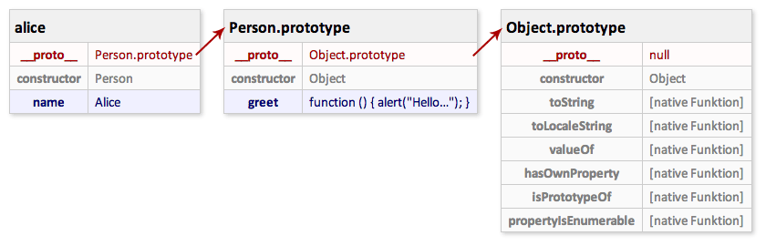

Object-oriented JavaScript
A brief introduction
PottJS, June 27th 2013
molily
- Mathias Schäfer
- Software developer at 9elements
- JavaScript since 1999
Sneak Preview
- Very brief introduction
- Teach some JavaScript basics
- Getting the basics right is tough
- Allows to solve higher-level problems
- Skip a lot of quirks and details
- Won’t talk about academic definitions of “object-oriented” and the history of OOP
What is an object?
- A data set / structure
- A way to store data in computer memory in an organized way
- In other languages: hash / hash map / associative array
What is an object?
Person
name: Marianne
age: 42
- A collection of properties
- Name → value
- Property name: Always a string
- Property value: Any type (Number, Boolean, String, null, undefined, Object…)
Object literals
var person = {
name: "Marianne",
age: 42
};
- Creates an object and saves it into a variable
- One of the most powerful features of JavaScript
Dealing with objects
var person = {
name: 'Marianne',
age: 42
};
alert(person.name);
alert(person['name']);
person.name = 'Anne';
person.profession = 'Engineer';
delete person.profession;
Objects are everywhere
- Everything either is an object or behaves like an object
- Most objects behave the same
- Most objects are mutable
- Create new properties, overwrite or delete existing properties
- Objects are work data but also used to structure your program
More complex objects
var person = {
name: 'Mathias',
employer: '9elements',
languages: ['JavaScript', 'Ruby'],
greet: function () {
alert('Hallo says ' + this.name);
}
};
person.greet();
- Objects can be nested endlessly
- If an object has a function property, it’s called “method”
- Originally called “sending messages to objects”
The world is made of objects
window.alert("Hello World!");- Object
window - Property
alert: a function - Function call
() - String literal
"Hello World!"as parameter
Objects vs. primitives
- Primitive values
- Boolean, Number, String
undefined,null
- Object
- Array, Function, RegExp, Date,
Document, Element, YourOwnType…
- Array, Function, RegExp, Date,
Objects vs. primitives
Primitive values are converted into objects on-the-fly
when you call their methods:
(2.5172).toFixed(2) // 2.52
"Hello World".charAt(6) // "W"
"Hello World".substring(6, 11) // "World"
Objects vs. primitives
var string = "Hello World";
string.newProperty = "Does this work?";
alert(string.newProperty); // undefined
Objects vs. Primitives
var string = "Hello World";
string.newProperty = "Does this work?";
alert(string.newProperty); // undefined
Inside the JavaScript engine:
var string = "Hello World";
var temporaryObject1 = Object(string);
temporaryObject1.newProperty = "Does this work?";
// temporaryObject1 is thrown away, we can’t get hold of it
var temporaryObject2 = Object(string);
alert(temporaryObject2.newProperty); // undefined
Objects are work data but also used to structure your program
JavaScript vs. classic OOP
- ECMAScript 3 doesn’t have (native) classes, interfaces, modules, traits, mixins, visibility
- ECMAScript 3 does have objects, prototypes and functions as first-class objects, constructors, closures
Newer JavaScript standards
- ECMAScript 5 (2009) has getters & setters, simple access rights (property descriptors)
- ECMAScript 6 (future) will have modules, classes as syntactic sugar, private properties, proxies for metaprogramming etc.
Structure your JavaScripts
- Using ECMAScript 3 features
- Modules, information hiding (private data), inheritance (delegation), pseudo-classes, object composition
- Conventions and code, not native language features
- Imperative, not declarative
- A lot of possibilities
Revealing Module Pattern
var module = (function () {
var privateVariable = 1;
var privateFunction = function () {…};
return {
publicProperty: 1,
publicMethod: function () {
alert(privateVariable);
privateFunction();
}
};
})();
module.publicProperty();
module.publicMethod();
Revealing Module Pattern
- Variable scope for private data and functions
- The code is wrapped in a function that is immediately invoked (IIFE)
- Nested functions are closures, may access the private data
- Returns an object literal with public properties and methods
Prototypes

Prototypes
- Share data between objects
- Reuse object capabilities (i.e. code)
- Make objects behave similar
- Efficient memory usage (Copy on Write)
Prototype
- The prototype is just another simple object
- Every object has a reference to its prototype
obj1 → obj2 - If a property cannot be found on the object,
look it up on the prototype (delegation)
obj1.prop? Nope. Get obj2.prop. - This way objects gain the abilities of other objects
Prototypes are like friends <3
Once upon the time, there were three students:
- Emma is good at mathematics and languages
- Alex is good at history and arts
- Tom is good at literature and sports
alex.doMathHomework()
tom.doHistoryHomework()
emma.doLiteratureHomework()
Guess who actually did the homework ;)
Prototypes
- JavaScript is based on prototypes internally
- Most objects are empty themselves and inherit their methods from their prototypes
- The prototype of core objects are readable and mutable
Object.prototype, Function.prototype, Array.prototype, String.prototype, HTMLDocument.prototype, HTMLElement.prototypeetc.
Set up prototypal delegation
How do I create an object that delegates to another object?
Object.create()(ES5)- Create a function, set the
prototypeproperty and create an instance using thenewoperator (ES3)
Object.create()
var emma = {
doMathHomework: function () {…}
};
var alex = Object.create(emma);
alex.doHistoryHomework = function () {…};
// delegates to Emma ;)
alex.doMathHomework();
// Alex actually does the homework
alex.doHistoryHomework();
Inspect the prototype
How do I retrieve the prototype of an object?
Object.getPrototypeOf(obj)(ES5)obj.__proto__(ES6)obj.constructor.prototype(ES3, most of the time)
Use the special property __proto__ for learning and debugging, it’s already supported by several browsers.
Prototype chain
Object o1 has a prototype o2. o2 has a prototype o3, and so on. The topmost prototype is Object.prototype.
var o2 = { name: 'o2' };
var o1 = Object.create(o2);
o1.__proto__ === o2
o2.__proto__ === Object.prototype
o1 → o2 → Object.prototype
var str = "Hello!";
str.__proto__ === String.prototype
String.prototype.__proto__ === Object.prototype
str → String.prototype → Object.prototype
Understanding prototypes

JavaScript vs. classes
- There’s no divide between fixed abstract types vs. instances
- JavaScript has simple mutable objects which may delegate
- Prototypal delegation is more flexible in the end
- Application development usually introduces pseudo-classes
- Useful features: Single inheritance, constructors, super calls
Pseudo-classes
- It’s possible to implement pseudo-classes in JavaScript:
Constructor function +prototype= instances - Warning: This is messy. Learn how it works but don’t expect it to be logical.

Pseudo-classes
// Constructor function
var Person = function (name) {
this.name = name;
};
// Add properties to the prototype
Person.prototype.greet = function () {
alert("Hello, my name is " + this.name + "!");
};
// Create an instance
var alice = new Person("Alice");
alice.greet();
alice → Person.prototype → Object.prototype
Constructors
var Person = function (name) {
this.name = name;
};
- Constructors are simple functions
- Constructors are object factories, they produce similar objects
- Per convention, the name starts with an uppercase letter
Constructor.prototype
Person.prototype.greet = function () {
alert("Hello, my name is " + this.name + "!");
};- Every function has a
prototypeproperty (confusing) - This is a simple, mutable object
- It’s the future prototype of instances created by the constructor
- Add instance properties and methods
Create instances
var alice = new Person("Alice");
alice.greet();
- Call the constructor using the
newoperator - Creates a new object that delegates to
Person.prototype - alice → Person.prototype
alice.greetcomes from the prototype
Prototype chain

The keyword this
thishas several meanings- In the global scope outside of functions:
window - Inside of functions, the meaning depends on the way the function is called
var f = function () { alert(this); };
var o = { f: f };
f(); // window / undefined in strict mode
o.f(); // o
Pseudo-classes
- Constructors,
prototype,new… Why are pseudo-classes so cumbersome? The pseudoclassical form can provide comfort to programmers who are unfamiliar with JavaScript, but it also hides the true nature of the language.
– Douglas Crockford: JavaScript. The Good Parts
Pseudo-classes
- Alternatives: Don’t use
new, just Object.create() and object factories - ECMAScript 6 introduces classes as syntactic sugar, still prototypal. Works the same, but less confusing
OOP tools
- Class hierarchies, multiple inheritance, object composition, mixins, traits
- Helper for simple inheritance (DE)
- Backbone’s extend()
- Dojo / compose
- PrototypeJS / Mootools
- Yahoo YUI (DE)
- Traits / Method combinators/decorators
- JSClass